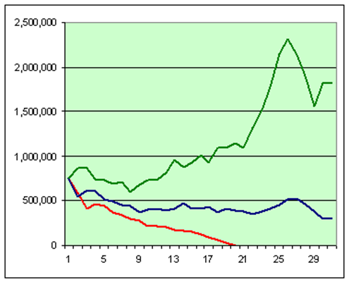

פורסם בתאריך 24.12.2017
התכנים בפוסט זה, כמו כל שאר התכנים בבלוג, הינם תכנים לימודיים במהותם, הם אינם מהווים ייעוץ או המלצה לביצוע פעולה בנייר ערך, ואין לראות בהם תחליף לייעוץ השקעות ו/או ייעוץ פנסיוני המתחשב בצרכיו הייחודיים של כל אדם.
כל מי שחושב על פרישה, לרבות פרישה מוקדמת, זקוק לתזרים מזומנים שוטף למחיה. התזרים הזה יכול להגיע מקצבאות שונות (כגון פנסיה) ו/או מחסכונותיו ומהתשואה שיניבו נכסיו. בארה"ב רבים מהמגיעים לגיל פרישה מנהלים את כספי הפנסיה שלהם (או חלקם) בעצמם, בתכניות IRA שונות. אלו שפרשו צעירים יותר וכלל אינם מקבלים קצבת פנסיה, מתקיימים לחלוטין מחסכונותיהם העצמאיים ומהתשואה שלהם. [במאמר מוסגר אציין כי בארה"ב ובמדינות נוספות, כולל קצת בארץ, קיימת תנועה תוססת המכונה FIRE = Financial Independent Retire Early. תנועה הולכת וגדלה זו כוללת אנשים רבים, שאינם עשירים מופלגים, אשר למדו כיצד להתנהל נכון מבחינה כלכלית וצרכנית, לחסוך, להשקיע את כספם ולפרוש מוקדם ממירוץ העכברים].
אז איך חיים מתיק ההשקעות? תחילה מחליטים על הסכום השנתי אותו נרצה למשוך למחייתנו, וכל שנה נמשוך פחות או יותר את אותו הסכום, עם הצמדה לאינפלציה. את הסכום נמשוך מתקבולים שמגיעים מנכסינו (ריבית מאג"חים, דיבידנדים ממניות, שכירות מנכס נדל"ן וכיוצ"ב) ו/או ממכירה של חלק מנכסינו. העניין הוא שכאשר חיים מתיק ההשקעות אין ברירה אלא למשוך פחות או יותר את הסכום שהגדרנו לעצמנו בכל מקרה, גם אם יש ירידות משמעותיות בשווקים. אם התקבולים לא מספיקים לנו ויש ירידות בשווקים, ניאלץ לממש חלק מהנכסים בהפסד. לכן, מועד הפרישה שלנו מאוד מאוד משמעותי. אם פרשנו בתקופה טובה בשוק ההון - התיק שלנו יגדל יותר מקצב המשיכה שלנו, וגם אם תבואנה שנים רעות בהמשך, הגידול בקרן יגן עלינו. מנגד, אם איתרע מזלנו ובשנים הראשונות לאחר הפרישה היו ירידות ממושכות, הקרן שלנו תצטמצם מהר (גם ירידות, גם משיכות, אולי גם אינפלציה). הסכנה היא שהקרן תתכווץ עד כדי כך שלא תוכל להתאושש יותר גם בגאות בשוק, עד שבסופו של דבר כל הכסף יאזל. הגרף שלהלן (מתוך מחשבון הפרישה firecalc.com) מציג 3 תיקי פרישה בשווי $750,000, מהם נמשכו מדי שנה $35,000 עם הצמדה לאינפלציה. התיקים מייצגים 3 מועדי פרישה שונים ומאוד סמוכים: 1973, 1974 ו-1975. למרות הקירבה ביניהם, ההבדלים עצומים: מי שפרש ב-1973 כילה את כל כספו תוך פחות מ-20 שנה, מי שפרש ב-1974 נשאר עם כחצי מהסכום הראשוני אחרי 30 שנה, ומי שפרש ב-1975 יותר מהכפיל את הסכום הראשוני.

לכן, אחד הדברים החשובים ביותר למי שחי מתיק ההשקעות שלו הוא לדעת מהו שיעור המשיכה הבטוח, ה-Safe Withdrawal Rate. שיעור זה מוגדר כסכום השנתי ביחס לתיק הפרישה אותו נוכל למשוך יחסית בבטחה מדי שנה (עם הצמדות לאינפלציה) מבלי לחשוש שהכסף יאזל עוד בימי חיינו. הגדרה מחמירה יותר מגדירה את שיעור המשיכה הבטוח ככזה שיבטיח בסבירות גבוהה שלא רק שהכסף לא יאזל לטווח ארוך, אלא שנחיה רק מהתשואה שלו, והקרן תישמר ליורשינו ואף תגדל עם השנים. בשביל לחשב את שיעור המשיכה הבטוח, צריך לדעת כמה שנים נרצה להסתמך על התיק שלנו לצרכי מחייה (ככל שפורשים צעירים יותר משך הזמן מתארך), ומה ההון ההתחלתי שלנו. כיוון שאף אחד לא יודע באמת לתזמן את השוק ובהתאם לתזמן את מועד הפרישה שלו, יש צורך בניתוח מקיף של עשרות שנים עם מועדי פרישה שונים, משכי זמן שונים לפרישה, ושילובים שונים של נכסים בתיק ההשקעות. בניתוח שכזה, מעניין להסתכל על הערך הממוצע של התיק בתום התקופה הרצויה, אבל לא פחות חשוב לבחון את ה-worst cases, ולהבין מה ההסתברות שכספינו יאזל לפני תום התקופה. מחקר מקיף שכזה אכן בוצע וניתן לקרוא את תוצאותיו ומסקנותיו כאן.
אני ממליץ מאוד לקרוא ולהתעמק, בפרט את ה-case study של השנים 2000-2016 (מי שפרש ב-2000 רגע לפני משבר ה-dot com מצא את עצמו בבעיה: משבר ממושך מיד בהתחלה, ועד שבאה ההתאוששות הגיע משבר הסאב-פריים). מה שבולט לעין כבר מעמוד ההקדמה של המחקר, הוא שבאופן אירוני ככל שהתיק יותר "מסוכן" (מכיל יותר מניות על חשבון נכסים סולידיים יותר כמו אג"חים), כך סיכויי השרידות שלו גבוהים יותר (ואיתם גם התשואה הממוצעת). זאת מפני שבתקופות רבות בהיסטוריה (כמו בשנים האחרונות) האג"חים הניבו תשואה נמוכה יחסית, וכדי להסתמך על תיק אג"חי ברובו, ההון הראשוני צריך להיות מאוד גדול כי שיעור המשיכה שלנו צריך להיות מאוד נמוך (פחות מ-2%). כדי להסתמך על הון ראשוני קטן יותר ושיעור משיכה גבוה יותר, נצטרך הרבה יותר מניות בתיק. מניות אמנם תנודתיות יותר, אבל הן גם מתאוששות יפה ממשברים וצומחות בקצב גבוה. תוצאות המחקר הראו שסיכויי השרידות היו 100% כמעט לכל התקופות (אפילו ל-60 שנה!) בתיק הכולל לפחות 75% מניות. המסקנה המתבקשת היא שהקצאת אחוז גבוה מהתיק למניות דווקא מקטינה את הסיכון, ולא מגדילה אותו, וכי אין כל היגיון בלהתבסס על תיק המורכב ברובו מאג"חים. בקורס השקעות ופנסיה ביעילות ובפשטות אני מקצה פרק שלם לבניית תיק השקעות לפרישה, גם לפנסיונרים וגם לפורשים צעירים.
המתכון בקצרה: משיכה שנתית של כ-3% צמודה למדד, כאשר התיק מכיל כ-70-85% מניות והיתר אג"חים, וביצוע איזונים תקופתיים בתיק, תעשה את העבודה. אסטרטגיה כזו תאפשר לתיק לשרוד אפילו 50 שנה ולהשאיר גם ירושה מכובדת לצאצאינו (במרבית המקרים אפילו להגדיל את שווי התיק בעת הפרישה).
רוצה לשאול שאלות ולהשתתף בדיון? את/ה מוזמן/ת לפוסט בעמוד הפייסבוק שלנו.
רוצה לקבל סוף כל סוף את כל הכלים והידע הפרקטי כדי להשקיע בקלות וביעילות את כספיך וחסכונותיך? לחץ/י כאן כדי לראות את שירותי ההדרכה והסיוע במימוש השקעות פאסיביות שאנחנו מציעים.